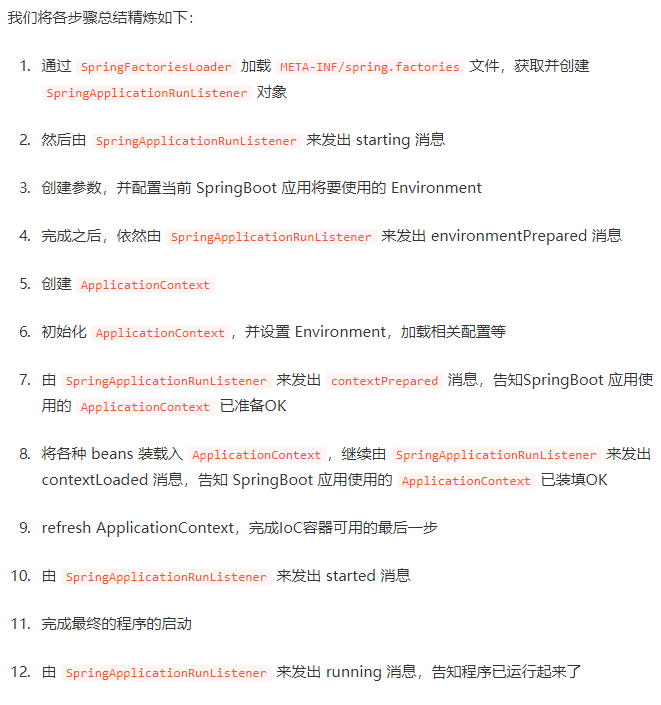
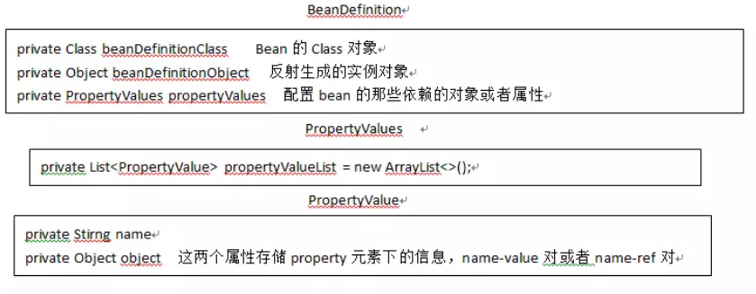
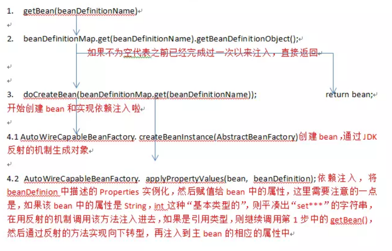
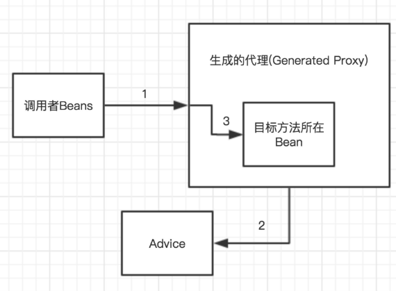
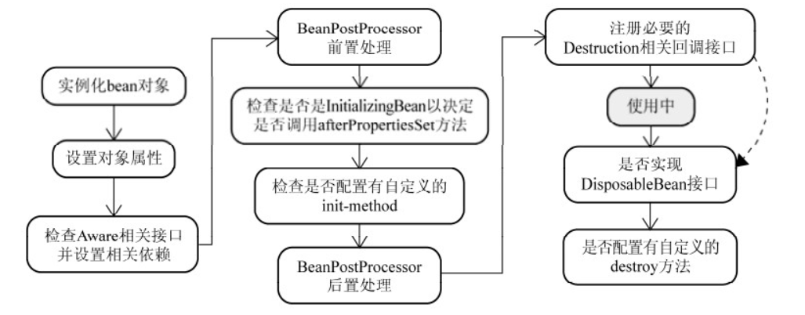
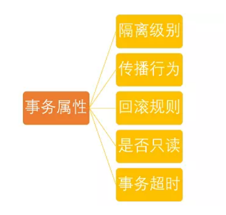

SpringBoot的启动和运行原理
SpringBoot的启动流程
首先是@SpringBootApplication 注解，@SpringBootApplication 注解实际上是 SpringBoot 提供的一个复合注解：@SpringBootConfiguration @EnableAutoConfiguration @ComponentScan
@SpringBootConfiguration 也是来源于 @Configuration，二者功能都是将当前类标注为配置类，并将当前类里以 @Bean 注解标记的方法的实例注入到srping容器中
@EnableAutoConfiguration 注解启用自动配置其可以帮助 SpringBoot 应用将所有符合条件的 @Configuration 配置都加载到当前 IoC 容器之中
@ComponentScan：@ComponentScan 对应于XML配置形式中的 context:component-scan，用于将一些标注了特定注解的bean定义批量采集注册到Spring的IoC容器之中，这些特定的注解大致包括：@Controller @Entity @Component @Service @Repository
其次是SpringApplication 以及 run() 方法（也就是自动加载的原理）
流程看一下：run 方法中去创建了一个 SpringApplication 实例，调用了一个初始化的 initialize 方法，
为 SpringApplication 对象赋一些初值、在调用 loadFactoryNames 方法其作用是把 /spring.factories 文件中的配置类转化为对象
创建了应用的监听器 SpringApplicationRunListeners 并开始监听

SpringBoot的IOC和AOP
IOC
它是一个容器的感觉,听过最多的一个词：控制反转，它表示让容器管理对象，不用每次都自己取new对象。使用@Service和@Autowired提供和使用服务。spring 是一种基于IOC容器编程的框架。 spring 把每一个需要管理的对象称为spring bean，spring管理这些bean 被我们称之为spring ioc容器。IOC容器具备两个基本功能：
通过描述管理（发布，获取）
bean通过描述完成
bean之间的依赖关系
一个对象的实例和字段的值被一个特殊的对象从外部注入，这个特殊的对象就是IOC。
IOC容器包含了所有的Spring Beans。
由此我们可以看书IOC的目的无外乎三种：
Resource定位，也就我们所说的配置文件（Xml），配置类（JavaConfig）。必须先找到描述bean对象的文件，才好完成后面对象创建与管理。BeanDefinition的解析和注册，承继上面的找到bean对象描述信息之后，我们需要在内存中用命为BeanDefinition的对象去封装它。何谓注册？顾名思义，注册就是为了后面的查询服务的，我们前文不是提及过希望有一个“容器”去管理它们吗。所以注册就是以beanName为key，beanDefinition为value注册到一个concurrentHashMap中去。Ioc的依赖注入，通过getbean()的方式获取bean对象，而依赖注入就是在这个方法内部完成的，内部是以递归的方式完成的。所以当我们在开发时候碰到空指针异常的时候，大多数时候是因为我们Spring配置文件处理不当，bean与bean之间的依赖关系没处理好。
那么我们平时初始化的时候做的事情：
- 初始化一个
beanfactory，beanfactory是一个接口，主要是实现getbean()方法和维护一个concurrentHashMap - 将上一步生成的
beanfactory让beanDefinitionReader来回调，因为Reader类封装完bean要扔到我们的concurrentHashMap中。 - 完成bean的注册和解析，既然有
spring.xml的路径，那我就可以获取该文件的文件流，解析其中的标签，然后用beanDefinition对象封装，最后扔到beanfactory的concurrentHashMap中。
那么beanDefinition是干啥的呢：

以上完成了beanDefinition的解析和注册，下面我们来看看它是如何完成依赖注入的，上文已经解释过bean的实例化和依赖注入是在getBean()的过程中完成的。

AOP
切面监控，面向切面编程，可以监控任何文件，目前普遍用于日志。这是基本的，它是基于代理模式实现的。

这张图反映了参与到AOP过程中的几个关键组件(以@Before Advice为例)：
- 调用者
Beans- 即调用发起者，它只知道目标方法所在Bean，并不清楚代理以及Advice的存在 - 目标方法所在
Bean- 被调用的目标方法 - 生成的代理 - 由
Spring AOP为目标方法所在Bean生成的一个代理对象 Advice- 切面的执行逻辑
代理模式
定义：为其他对象提供一种代理以控制对这个对象的访问。这段话比较官方，但我更倾向于用自己的语言理解：比如A对象要做一件事情，在没有代理前，自己来做，在对A代理后，由A的代理类B来做。代理其实是在原实例前后加了一层处理，这也是AOP的初级轮廓。
代理的话又分为：
- 静态代理模式：静态代理说白了就是在程序运行前就已经存在代理类的字节码文件，代理类和原始类的关系在运行前就已经确定，保证了业务类只需关注逻辑本身，但是如果要代理的方法很多，代码就很复杂了。
- 动态代理模式:动态代理类的源码是在程序运行期间通过
JVM反射等机制动态生成，代理类和委托类的关系是运行时才确定的。
动态代理又有两种方法：
- 使用
jdk生成的动态代理的前提是目标类必须有实现的接口。但这里又引入一个问题,如果某个类没有实现接口,就不能使用jdk动态代理。 Cglib是以动态生成的子类继承目标的方式实现，在运行期动态的在内存中构建一个子类，Cglib使用的前提是目标类不能为final修饰。因为final修饰的类不能被继承。
我们在使用Spring AOP的时候，一般是不需要选择具体的实现方式的。Spring AOP能根据上下文环境帮助我们选择一种合适的。但是也不是每次都能很正确的选择出来，比方说定义了一个接口，这个接口中并没有定义任何方法，这个时候利用jdk创建代理对象就会有问题需要强制使用CGLIB来避免这个问题
1 | // 向@EnableAspectJAutoProxy注解中添加属性proxyTargetClass = true即可。 |
Spring生成代理对象
Spring如何使用JDK来生成代理对象，具体的生成代码放在JdkDynamicAopProxy这个类中，具体步骤
获取代理类要实现的接口,除了
Advised对象中配置的,还会加上SpringProxy, Advised(opaque=false)检查上面得到的接口中有没有定义
equals或者hashcode的接口调用
Proxy.newProxyInstance创建代理对象对象生成后：
InvocationHandler是JDK动态代理的核心，生成的代理对象的方法调用都会委托到InvocationHandler.invoke()方法，通过这个方法织入切面
Spring如何使用CGLIB来生成代理对象：通过动态地对目标对象进行子类化
BeanFactory 和 FactoryBean 的区别
BeanFactory 是 IOC 最基本的容器，负责生产和管理 bean，它为其他具体的 IOC 容器提供了最基本的规范，例如 DefaultListableBeanFactory。
FactoryBean 是一个接口，当在 IOC 容器中的 Bean 实现了 FactoryBean 后，通过 getBean(String BeanName)获取到的 Bean 对象并不是 FactoryBean 的实现类对象，而是这个实现类中的 getObject() 方法返回的对象。
BeanFactory 和 FactoryBean 其实没有什么比较性的，只是两者的名称特别接近
注解的原理
注解相当于一种标记，在程序中加入注解就等于为程序打上某种标记在此以后，javac 编译器、开发工具和其他程序可以通过反射来了解你的类及各种元素上有无何种标记，看你的程序有什么标记，就去干相应的事情，标记(注解)可以加在包、类，属性、方法，方法的参数以及局部变量上。springboot 注解主要用来配置 bean，切面相关配置。
元注解和组合注解
元注解：注解的最小单位，有 4 个分别为 @Retention @Target @Document @Inherited
组合注解：由元注解组合而成的注解，比如@Controller、@Override、@Component等我们平常用的所有注解都是由这 4 个注解所组成的
@Retention
有三种取值
1 | (RetentionPolicy.SOURCE) |
首先要明确生命周期长度 SOURCE < CLASS < RUNTIME，当在 Java 源程序上加了一个注解，这个 Java 源程序要由 javac 去编译
@Target
1 | (ElementType.ANNOTATION_TYPE) |
@Documented
说明该注解将被包含在 javadoc 中
@Inherited
说明子类能够继承父类的的该注解，就是当一个类 A 使用了改注解，一个类 B 继承这个类 A,则类 B 也拥有类 A 的所有注解
注解的作用
@SpringBootApplication
表示这是一个配置文件，点击进去可以看到这些配置文件
1 | (ElementType.TYPE) |
@Component
泛指组件，把普通pojo实例化到spring容器中，相当于配置文件中的 <bean id="" class=""/>。
因为在持久层、业务层和控制层中，分别采用@Repository、@Service和@Controller对分层中的类进行凝视，而用@Component对那些比较中立的类进行凝视。
@Controller
由@Retention @Target @Document 和 @Component 这几个注解组成
用于标注控制层，相当于struts中的action层。
Spring中@Controller和@RestController之间的区别：
@RestController注解相当于@ResponseBody ＋ @Controller合在一起的作用。
1) 如果只是使用 @RestController注解Controller，则Controller中的方法无法返回jsp页面，或者html，配置的视图解析器 InternalResourceViewResolver不起作用，返回的内容就是Return 里的内容。
2) 如果需要返回到指定页面，则需要用 @Controller配合视图解析器InternalResourceViewResolver才行。如果需要返回JSON，XML或自定义mediaType内容到页面，则需要在对应的方法上加上@ResponseBody注解。
@Autowired
用来做依赖注入的，直接生成就不用new对象了。
@Service
用于标注服务层，主要用来进行业务的逻辑处理
@PostConstruct
修饰的方法在构造器之后被调用
@PreDestroy
修饰的方法在销毁之前调用，释放某些资源
@Repository
用于标注数据访问层，也可以说用于标注数据访问组件，即DAO组件.
@Configuration
@Configuration定义配置类，被注解的类内部包含有一个或多个被@Bean注解的方法,这些方法将会被AnnotationConfigApplicationContext或AnnotationConfigWebApplicationContext类进行扫描，并用于构建bean定义，初始化Spring容器。
@Bean
@Bean注解注册bean,同时可以指定初始化和销毁方法
@Scope(“prototype”)
这个注解导致每次调用getbean方法时都实例化bean，但是实际上很少会这样去做。记住被Spring容器管理的Bean只被实例化一次，因为它是单例的。
@Autowired 与@Resource的区别
@Autowired 与 @Resource 都可以用来装配 bean. 都可以写在字段上，但是 @Autowired 默认按类型装配，@Resource 是 JDK1.6 支持的注解，默认按照名称进行装配
@Autowired与@Override的区别
@Autowired 注解的作用是解决对类成员变量、方法及构造函数进行标注，完成自动装配的工作， @Override 是伪代码,表示重写(当然不写也可以)可以当注释用,可以给你验证 @Override 下面的方法名是否是你父类中所有的，如果没有则报错
有关注解的一个问题
一个 controller 分别调用两个 Service 再调用两个 Dao 时，注解加在什么层，如何实现事务？
应该加在 Service 层吧，配置一下 spring 的事务传播，创建两个事务。
那如果那两个Service强相关呢？
Dao 层中的方法更多的是一种对数据库的增删改查的原子性操作，而 Service 层中的方法相当于对这些原子性的操作做一个组合，这里要同时操作 TeacherDao、StudentDao 中的 insert 方法所以新建一个接口，添加 @Service注解。@Transactional 注解开启事务管理，利用事务管理器加入。
哪些bean会被扫描
被@controller 、@service、@repository 、@component注解的类，都会把这些类纳入进spring容器中进行管理
Spring容器管理Bean
容器实现了IOC，
Bean的实例化；Bean的命名；Bean的作用域；Bean的生命周期回调；Bean延迟实例化；指定Bean依赖关系。
Bean的生命周期
Spring IOC容器对Bean的生命周期进行管理的过程如下：
- 通过构造器或工厂方法创建
Bean实例 - 为
Bean的属性设置值和对其它Bean的引用 - 调用
Bean的初始化方法 Bean可以使用了- 当容器关闭时，调用
Bean的销毁方法
Spring 实例化 Bean 的过程

- 实例化 bean 对象，类似于 new XXObject()
- 将配置文件中配置的属性填充到刚刚创建的 bean 对象中。
- 检查 bean 对象是否实现了 Aware 一类的接口，如果实现了则把相应的依赖设置到 bean 对象中。比如如果 bean 实现了 BeanFactoryAware 接口，Spring 容器在实例化bean的过程中，会将 BeanFactory 容器注入到 bean 中。
- 调用 BeanPostProcessor 前置处理方法，即 postProcessBeforeInitialization(Object bean, String beanName)。
- 检查 bean 对象是否实现了 InitializingBean 接口，如果实现，则调用 afterPropertiesSet 方法。或者检查配置文件中是否配置了 init-method 属性，如果配置了，则去调用 init-method 属性配置的方法。
- 调用 BeanPostProcessor 后置处理方法，即 postProcessAfterInitialization(Object bean, String beanName)。我们所熟知的 AOP 就是在这里将 Adivce 逻辑织入到 bean 中的。
- 注册 Destruction 相关回调方法。
- bean 对象处于就绪状态，可以使用了。
- 应用上下文被销毁，调用注册的 Destruction 相关方法。如果 bean 实现了 DispostbleBean 接口，Spring 容器会调用 destroy 方法。如果在配置文件中配置了 destroy 属性，Spring 容器则会调用 destroy 属性对应的方法。
Spring Boot 需要独立的容器运行吗？
可以不需要，内置了 Tomcat / Jetty 等容器。
Spring 直接注入和直接new一个对象有什么不同?
spring 实现了对象池，一些对象创建和使用完毕之后不会被销毁，放进对象池（某种集合）以备下次使用，下次再需要这个对象，不new，直接从池里出去来用。
@Autowired 相当于 setter，在注入之前，对象已经实例化，是在这个接口注解的时候实例化的；
而 new 只是实例化一个对象，而且 new 的对象不能调用注入的其他类。
Spring事务管理
事务原理
Spring 事务的本质其实就是数据库对事务的支持：加上了 @EnableTransctionManagement注解就表示使用Spring 事务机制来进行事务管理。
- 配置文件开启注解驱动，在相关的类和方法上通过注解 @Transactional 标识。
- spring 在启动的时候会去解析生成相关的 bean，这时候会查看拥有相关注解的类和方法，并且为这些类和方法生成代理，并根据 @Transaction 的相关参数进行相关配置注入，这样就在代理中为我们把相关的事务处理掉了（开启正常提交事务，异常回滚事务）。
- 真正的数据库层的事务提交和回滚是通过bin log或者redo log实现的。
Spring 事务支持编程式事务管理和声明式事务管理两种。
Spring事务管理接口
- PlatformTransactionManager：（平台）事务管理器
- TransactionDefinition：事务定义信息(事务隔离级别、传播行为、超时、只读、回滚规则)
- TransactionStatus：事务运行状态
PlatformTransactionManager
TransactionTemplate 或者直接使用底层的 PlatformTransactionManager 对于编程式事务管理，spring 推荐使用 TransactionTemplate。Spring 并不直接管理事务，而是提供了多种事务管理器，通过PlatformTransactionManager 接口来实现。PlatformTransactionManager 接口中定义了三个方法：
1 | Public interface PlatformTransactionManager()...{ |
事务管理器接口PlatformTransactionManager通过getTransaction(TransactionDefinition definition)方法来得到一个事务，这个方法里面的参数是 TransactionDefinition类，这个类就定义了一些基本的事务属性（事务的一些基本配置，描述了事务策略如何应用到方法上）。
事务属性包含了5个方面：

TransactionDefinition
TransactionDefinition中定义了5个方法以及一些表示事务属性的常量比如隔离级别、传播行为等等的常量。
1 | public interface TransactionDefinition { |
TransactionDefinition接口中定义了五个表示隔离级别的常量：
TransactionDefinition.ISOLATION_DEFAULT: 使用后端数据库默认的隔离级别，Mysq默认采用的REPEATABLE_READ隔离级别Oracle默认采用的READ_COMMITTED隔离级别.TransactionDefinition.ISOLATION_READ_UNCOMMITTED: 最低的隔离级别，允许读取尚未提交的数据变更，可能会导致脏读、幻读或不可重复读。TransactionDefinition.ISOLATION_READ_COMMITTED：允许读取并发事务已经提交的数据，可以阻止脏读，但是幻读或不可重复读仍有可能发生TransactionDefinition.ISOLATION_REPEATABLE_READ: 对同一字段的多次读取结果都是一致的，除非数据是被本身事务自己所修改，可以阻止脏读和不可重复读，但幻读仍有可能发生。TransactionDefinition.ISOLATION_SERIALIZABLE:最高的隔离级别，完全服从ACID的隔离级别。所有的事务依次逐个执行，这样事务之间就完全不可能产生干扰，也就是说，该级别可以防止脏读、不可重复读以及幻读。
在TransactionDefinition定义中包括了如下几个表示传播行为的常量：
支持当前事务的情况：
TransactionDefinition.PROPAGATION_REQUIRED： 如果当前存在事务，则加入该事务；如果当前没有事务，则创建一个新的事务。TransactionDefinition.PROPAGATION_SUPPORTS： 如果当前存在事务，则加入该事务；如果当前没有事务，则以非事务的方式继续运行。TransactionDefinition.PROPAGATION_MANDATORY： 如果当前存在事务，则加入该事务；如果当前没有事务，则抛出异常。（mandatory：强制性）
不支持当前事务的情况：
TransactionDefinition.PROPAGATION_REQUIRES_NEW：创建一个新的事务，如果当前存在事务，则把当前事务挂起。TransactionDefinition.PROPAGATION_NOT_SUPPORTED： 以非事务方式运行，如果当前存在事务，则把当前事务挂起。TransactionDefinition.PROPAGATION_NEVER：以非事务方式运行，如果当前存在事务，则抛出异常。
其他情况：
TransactionDefinition.PROPAGATION_NESTED：如果当前存在事务，则创建一个事务作为当前事务的嵌套事务来运行；如果当前没有事务，则该取值等价于TransactionDefinition.PROPAGATION_REQUIRED。
事务超时属性(一个事务允许执行的最长时间)
所谓事务超时，就是指一个事务所允许执行的最长时间，如果超过该时间限制但事务还没有完成，则自动回滚事务。在TransactionDefinition 中以int的值来表示超时时间，其单位是秒。
事务只读属性
事务的只读属性是指，对事务性资源进行只读操作或者是读写操作。所谓事务性资源就是指那些被事务管理的资源。如果确定只对事务性资源进行只读操作，那么我们可以将事务标志为只读的，以提高事务处理的性能。在 TransactionDefinition 中以boolean类型来表示该事务是否只读。
TransactionStatus
它用来记录事务的状态 该接口定义了一组方法,用来获取或判断事务的相应状态信息.
实现方式
Spring提供了对编程式事务和声明式事务的支持，编程式事务允许用户在代码中精确定义事务的边界，而声明式事务（基于AOP）有助于用户将操作与事务规则进行解耦。
编程式事务
Spring提供两种方式的编程式事务管理，分别是：使用TransactionTemplate和直接使用PlatformTransactionManager。
声明式事务
不需要通过编程的方式管理事务，这样就不需要在业务逻辑代码中掺杂事务管理的代码，只需在配置文件中做相关的事务规则声明(或通过基于@Transactional注解的方式)，便可以将事务规则应用到业务逻辑中。
Spring解决对象相互依赖
对Spring来说循环依赖，有以下几种：
- Prototype类型Bean的循环依赖
- 构造器循环依赖
- setter循环依赖
对于第1类和第2类的循环依赖，Spring的处理是不解决，直接抛出BeanCurrentlyInCreationException异常，因此，Spring只处理Singleton类型的Bean的setter循环依赖。
A 依赖 B， B 依赖 A
当 A 创建的时候，会把 A 对应的 ObjectFactory 放在缓存中，当依赖注入的时候发现了 B 对象，调用 getBean() 方法获取 B 对象， 然后创建 B 对象，会把 B 对应的 ObjectFactory 放在缓存中。
此时 B 依赖 A ，然后再调用 getBean 获取 A 对象， 此时调用 AbstractBeanFactory#doGetBean 从缓存中获取到 A 对应的 ObjectFactory。
这样就避免了死循环，然后再创建成功之后删除 ObjectFactory 完成依赖注入。
思路：中间对象去解决循环依赖。